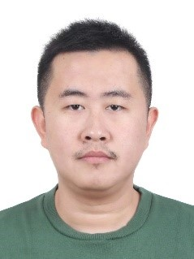

Xingyu Wu
M.E. candidate, Grade 2020

Education
2013.09-2017.06 B.E. in Hainan University
2020.09-Present M.E. candidate in Shanghai Maritime University
Research Interests
Computer vision
Ship recognition and MOT
Contact:
wuxingyu2@stu.shmtu.edu.cn